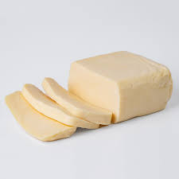
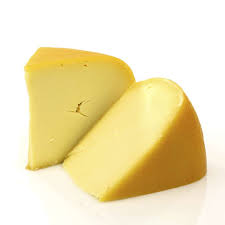
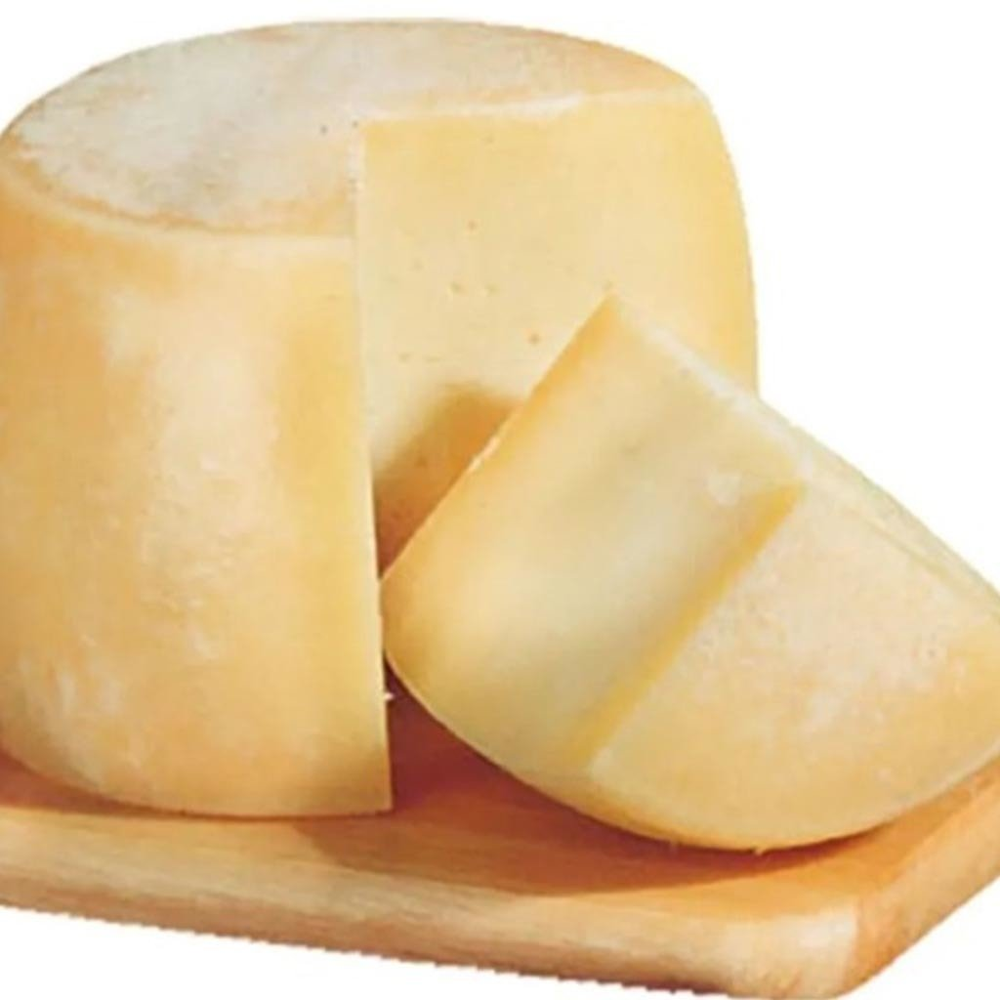

Queso Cremoso
(precio) el kilogramo.
es un queso fresco, de pasta blanda, cerrada algo elástica y cremosa; de sabor ligeramente ácido y aroma suave

Queso Gouda
(precio) el kilogramo
es un queso de leche de vaca pasteurizada que sobresale por su color amarillento. Presenta una textura dura y es característico por su forma redondeada.

Queso Sardo
(precio) el kilogramo
queso duro, con sabor maduro fuerte y salado que refuerza cualquier plato de pasta o sopa

Queso Provoleta
(precio) por kilogramo
Este tipo de queso fue creado especialmente para asar a la parrilla o a la plancha, y su forma cilíndrica permite el fraccionamiento en rodajas.